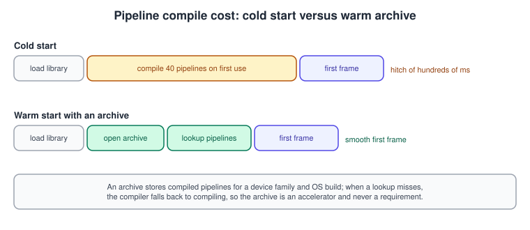
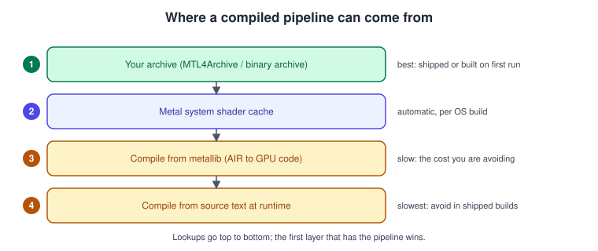
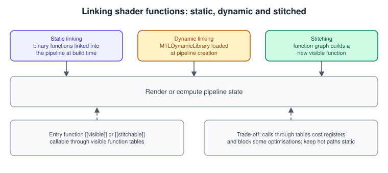

Shader Compilation and Pipeline Caching
|
This content was generated with the assistance of AI and should be verified against the official documentation before being relied on in production. |
A pipeline state that you create in your first frame can take tens or hundreds of milliseconds, because the GPU code is produced then.
A player sees that as a hitch the first time each effect appears. This page explains where compilation happens, what Metal 4’s
MTL4Compiler lets you control, and the several ways to avoid or hide the cost: function specialization to make variants cheaply,
harvested archives to skip compilation entirely, dynamic libraries and stitching to share code, and warm-up to move whatever is left
off the critical path.
The general concepts behind this page are in Shading Languages Landscape.
The facts were checked in November 2026. The Metal 4 compilation API (MTL4Compiler, MTL4Archive, MTL4PipelineDataSetSerializer, the
MTL4* descriptors) is available from the 26 OSes (iOS, iPadOS, macOS, tvOS and visionOS 26.0) and works with Metal Shading Language 4;
MTLBinaryArchive, MTLDynamicLibrary and function stitching exist since iOS 14 / macOS 11 and iOS 15 respectively, and Apple notes that both
Metal 3 and Metal 4 can load binary archives. Xcode 27 with the Metal Toolchain component is the current toolchain. In the running
example (the Bookshelf: a multiplatform SwiftUI app hosting an MTKView with a Metal 4 path and a Metal 3 fallback, plus a visionOS
target) the pipeline count has grown with every stage: lit and unlit books, shadow and depth-only variants, instanced and
indirect draws, the compute kernels and the ray-tracing and MetalFX passes. This page is where we keep that growth from showing up
as stutter. The render pipeline itself is in The Metal Render Pipeline and the shading
language in Metal Shading Language.
The path from source to GPU code

Compilation is split into stages, and only the last one is device-specific:
-
Front end, at build time. The
metalcompiler turns each.metalfile into AIR (Apple’s intermediate representation) and themetallibtool packs AIR files into a.metalliblibrary. Xcode does both for you and embeds the result as the app’s default library. -
Library creation, at load time.
device.makeDefaultLibrary(),makeLibrary(URL:)and, with Metal 4,MTL4Compiler.makeLibrary(descriptor:)load a library. Loading is cheap because AIR is not yet machine code. -
Back end, at pipeline creation. Creating a render, compute, mesh or machine-learning pipeline state (or a binary function) turns the AIR for that device into GPU code. This is the expensive step and it depends on the pipeline: the same function compiled with a different blend state or pixel format is a different compile.
-
Caches. The system keeps a cache of pipelines it has already compiled for your app, but you cannot rely on it surviving an OS update, a reinstall or a cleared cache. Your own archive is the cache you control.
The command line, for reference:
# Front end, per file
xcrun -sdk macosx metal -c Shaders.metal -o Shaders.air
# Pack one or more AIR files into a library
xcrun -sdk macosx metallib Shaders.air -o Shaders.metallibSource: Metal: Shader libraries
Building shaders as part of the Xcode target is better than compiling from source strings at run time: source compilation happens on the
user’s device, in the first frame that needs it, and it repeats the front end every launch. Reserve MTL4LibraryDescriptor.source
(the source, name and options properties) for tools and for hot-reload in development builds.
MTL4Compiler
Before Metal 4 the device compiled things implicitly, on whatever thread called makeRenderPipelineState. Metal 4 moves compilation
into an object you create and own:
let descriptor = MTL4CompilerDescriptor()
descriptor.label = "Bookshelf compiler"
let compiler = try device.makeCompiler(descriptor: descriptor)Source: MTL4Compiler
What a compiler instance gives you, from Apple’s compilation guide:
-
Control over when. You decide when each compile runs, so you can schedule the expensive ones during loading screens.
-
Quality of service. Requests made through a dispatch queue run at that queue’s QoS; a call made directly runs at the calling thread’s QoS. Give a compiler task a
.utilityor.backgroundqueue to keep the main and render threads responsive, or a.userInitiatedone for a pipeline you need now. -
Synchronous or asynchronous.
makeRenderPipelineState(descriptor:dynamicLinkingDescriptor:compilerTaskOptions:)has a synchronous form that blocks and anasync throwsform (and completion-handler forms) that return immediately. Prototypes use the synchronous calls; shipping games use the asynchronous ones. -
Progress. Compile tasks report their status (
MTL4CompilerTaskStatus) so a loading bar can follow them. -
Harvesting. The compiler can record every pipeline it builds (see below).
-
Several compilers. Create more than one: for example, one for critical pipelines with high QoS and one for background warm-up.
The compiler’s factory methods cover everything that compiles:
| Method | Produces |
|---|---|
|
An |
|
An |
|
An |
|
An |
|
A pipeline derived from a previous, unspecialized pipeline; see below. |
|
An |
|
An |
Pipeline descriptors
MTL4RenderPipelineDescriptor replaces the older MTLRenderPipelineDescriptor. It names functions through function descriptors instead of
MTLFunction objects, so a pipeline can be described, harvested and compiled without having made the function first:
| Property | Notes |
|---|---|
|
|
|
Each |
|
The same concepts as before. |
|
Needed if the pipeline will be used with an indirect command buffer. |
|
Enable and describe linking of binary functions (see below). |
|
An |
|
Name it; the debugger and the HUD show it. |
Because the render targets' pixel formats are part of the descriptor, every distinct combination is a separate compile. Keep the number of formats small (one HDR scene format, one drawable format) and the variants stay manageable.
Function specialization
Branching on a per-draw constant inside a shader costs registers on every thread. Function constants turn that branch into a compile-time decision: the shader declares constants, the app sets their values when it creates a pipeline, and the compiler removes the dead code. One source function becomes many specialized pipelines, and the front end still ran at build time.
#include <metal_stdlib>
using namespace metal;
constant bool useShadows [[function_constant(0)]];
constant bool useNormalMap [[function_constant(1)]];
constant bool hasShadows = is_function_constant_defined(useShadows) ? useShadows : false;
constant bool hasNormalMap = is_function_constant_defined(useNormalMap) ? useNormalMap : false;
struct FragmentIn {
float4 position [[position]];
float3 normal;
float2 uv;
float4 shadowCoord;
};
fragment float4 book_fragment(FragmentIn in [[stage_in]],
texture2d<float> cover [[texture(0)]],
texture2d<float> normalMap [[texture(1), function_constant(hasNormalMap)]],
depth2d<float> shadowMap [[texture(2), function_constant(hasShadows)]],
sampler linearSampler [[sampler(0)]])
{
float3 n = normalize(in.normal);
if (hasNormalMap) {
n = normalize(normalMap.sample(linearSampler, in.uv).xyz * 2.0 - 1.0);
}
float lit = max(dot(n, float3(0.0, 1.0, 0.0)), 0.1);
if (hasShadows) {
float3 coord = in.shadowCoord.xyz / in.shadowCoord.w;
lit *= shadowMap.sample_compare(linearSampler, coord.xy, coord.z);
}
return float4(cover.sample(linearSampler, in.uv).rgb * lit, 1.0);
}Resource arguments can themselves be conditional with function_constant(...), so a variant without shadows does not even declare the
shadow map. The Swift side creates the variants:
import Metal
struct BookVariant: Hashable {
var shadows: Bool
var normalMap: Bool
}
final class BookPipelines {
private let device: MTLDevice
private let compiler: MTL4Compiler
private let library: MTLLibrary
private var cache: [BookVariant: MTLRenderPipelineState] = [:]
init(device: MTLDevice, compiler: MTL4Compiler, library: MTLLibrary) {
self.device = device
self.compiler = compiler
self.library = library
}
private func specialized(name: String, variant: BookVariant) -> MTL4SpecializedFunctionDescriptor {
var shadows = variant.shadows
var normalMap = variant.normalMap
let constants = MTLFunctionConstantValues()
constants.setConstantValue(&shadows, type: .bool, index: 0)
constants.setConstantValue(&normalMap, type: .bool, index: 1)
let base = MTL4LibraryFunctionDescriptor()
base.library = library
base.name = name
let function = MTL4SpecializedFunctionDescriptor()
function.functionDescriptor = base
function.constantValues = constants
return function
}
/// Compiles one variant without blocking the caller.
func pipeline(for variant: BookVariant,
colorFormat: MTLPixelFormat,
options: MTL4CompilerTaskOptions? = nil) async throws -> MTLRenderPipelineState {
if let existing = cache[variant] { return existing }
let vertex = MTL4LibraryFunctionDescriptor()
vertex.library = library
vertex.name = "book_vertex"
let descriptor = MTL4RenderPipelineDescriptor()
descriptor.label = "Book shadows=\(variant.shadows) normalMap=\(variant.normalMap)"
descriptor.vertexFunctionDescriptor = vertex
descriptor.fragmentFunctionDescriptor = specialized(name: "book_fragment", variant: variant)
descriptor.colorAttachments[0].pixelFormat = colorFormat
let state = try await compiler.makeRenderPipelineState(descriptor: descriptor,
compilerTaskOptions: options)
cache[variant] = state
return state
}
}Points to remember:
-
The class is not thread-safe as written: guard
cachewith an actor or a lock when several tasks request variants. -
Eight variants from three constants is cheap; thirty constants make a combinatorial explosion. Use constants for choices that change per material or per quality level, and keep per-draw data in buffers.
-
makeRenderPipelineStateBySpecialization(descriptor:pipeline:)builds a specialized pipeline from an earlier unspecialized one, which helps when many pipelines share an expensive shared part. -
The older equivalent is
MTLLibrary.makeFunction(name:constantValues:)plus anMTLRenderPipelineDescriptor; Metal 3 code keeps working.
Harvesting pipelines into archives
An archive is a file of compiled pipelines, produced on the device family (or ahead of time) and loaded later so that creating the pipeline is a lookup. Metal 4 calls producing one harvesting.

Metal 4: the pipeline data set serializer
import Metal
/// Development build: compile every pipeline once and write the archive.
func harvestPipelines(device: MTLDevice, archiveURL: URL,
build: (MTL4Compiler) async throws -> Void) async throws {
let serializerDescriptor = MTL4PipelineDataSetSerializerDescriptor()
serializerDescriptor.configuration = [.captureDescriptors, .captureBinaries]
let serializer = device.makePipelineDataSetSerializer(descriptor: serializerDescriptor)
let compilerDescriptor = MTL4CompilerDescriptor()
compilerDescriptor.pipelineDataSetSerializer = serializer
let compiler = try device.makeCompiler(descriptor: compilerDescriptor)
try await build(compiler) // create every pipeline the app uses
try serializer.serializeAsArchiveAndFlush(url: archiveURL)
}
/// Shipping build: open the archive and let the compiler look pipelines up in it.
func makeLookupOptions(device: MTLDevice, archiveURL: URL) throws -> MTL4CompilerTaskOptions {
let archive = try device.makeArchive(url: archiveURL)
let options = MTL4CompilerTaskOptions()
options.lookupArchives = [archive]
return options
}
// Pass the options as compilerTaskOptions: when creating pipelines. A miss falls back to compiling.Source: MTL4PipelineDataSetSerializer
The serializer’s configuration decides what is recorded: captureDescriptors keeps the pipeline descriptions (enough to recompile
them) and captureBinaries keeps the compiled code. Besides serializeAsArchiveAndFlush(url:), serializeAsPipelinesScript() returns a
pipeline script as Data: a description of pipelines that you can precompile into an archive during development with Apple’s tools
instead of on a device, which is how you cover GPU families you do not own. Apple’s guide on compiling archives from a configuration
script describes that workflow.
An archive is specific to a GPU architecture and an OS build. Ship archives for the families you support, or build the archive on first
launch in the background (the captureBinaries route) and reuse it afterwards. Keep a version number in the file name and rebuild on mismatch.
Metal 3: MTLBinaryArchive
import Metal
func buildBinaryArchive(device: MTLDevice, url: URL,
descriptors: [MTLRenderPipelineDescriptor]) throws {
let archiveDescriptor = MTLBinaryArchiveDescriptor() // url == nil: start empty
let archive = try device.makeBinaryArchive(descriptor: archiveDescriptor)
for descriptor in descriptors {
try archive.addRenderPipelineFunctions(descriptor: descriptor)
}
try archive.serialize(to: url)
}
func makePipeline(device: MTLDevice, url: URL,
descriptor: MTLRenderPipelineDescriptor) throws -> MTLRenderPipelineState {
let archiveDescriptor = MTLBinaryArchiveDescriptor()
archiveDescriptor.url = url
let archive = try device.makeBinaryArchive(descriptor: archiveDescriptor)
descriptor.binaryArchives = [archive] // consult the archive first
return try device.makeRenderPipelineState(descriptor: descriptor)
}Source: MTLBinaryArchive
The archive has matching addComputePipelineFunctions, addMeshRenderPipelineFunctions, addTileRenderPipelineFunctions, addFunction and
addLibrary calls. If you create the pipeline with the failOnBinaryArchiveMiss pipeline option, a miss returns an error instead of
silently compiling, which is the way to test that your archive really covers the app. The archive is a hint, never a guarantee: if the OS or GPU changed, Metal compiles as usual.
Dynamic libraries
A dynamic library (MTLDynamicLibrary) is a compiled library of shader functions that pipelines link to at creation time, instead of each
pipeline containing its own copy. Use it for large shared code (a noise or colour toolkit, a shading model) used by many pipelines: the code is compiled
once, the app is smaller, and changing the library does not recompile all of its users.
import Metal
/// Compiles the helper functions once and saves them as a dynamic library.
func makeHelpersLibrary(device: MTLDevice, compiler: MTL4Compiler, source: String, saveTo url: URL) throws -> MTLDynamicLibrary {
let options = MTLCompileOptions()
options.libraryType = .dynamic
options.installName = "@executable_path/ShadingHelpers.metallib"
let library = try device.makeLibrary(source: source, options: options)
let dynamicLibrary = try compiler.makeDynamicLibrary(library: library)
try dynamicLibrary.serialize(to: url)
return dynamicLibrary
}
/// Creates a render pipeline that links the helpers when it is built.
func makePipeline(compiler: MTL4Compiler, descriptor: MTL4RenderPipelineDescriptor,
helpers: MTLDynamicLibrary) throws -> MTLRenderPipelineState {
let linking = MTL4RenderPipelineDynamicLinkingDescriptor()
linking.fragmentLinkingDescriptor.preloadedLibraries = [helpers]
return try compiler.makeRenderPipelineState(descriptor: descriptor,
dynamicLinkingDescriptor: linking,
compilerTaskOptions: nil)
}Source: Metal dynamic libraries
The shader functions to share are exported with the usual MSL attributes ([[visible]] makes a function callable across the library
boundary); the library’s installName is the name pipelines use to find it. The stage-level
MTL4PipelineStageDynamicLinkingDescriptor has preloadedLibraries, binaryLinkedFunctions and maxCallStackDepth; the call stack depth matters because
functions called through the library can nest, and the pipeline must reserve stack for the deepest chain. The Metal 3 route creates the library with
device.makeDynamicLibrary(library:).
Binary functions, static linking and stitching

-
Binary functions.
MTL4Compiler.makeBinaryFunction(descriptor:compilerTaskOptions:)compiles a visible or intersection function ahead of time into anMTL4BinaryFunction(it hasfunctionTypeandname). A pipeline that setssupportVertexBinaryLinkingorsupportFragmentBinaryLinkingand anMTL4StaticLinkingDescriptor(functionDescriptors,groups,privateFunctionDescriptors) links them in. Typical use: swap a material function or an intersection function without recompiling the rest of the pipeline. -
Function stitching builds a new function from a graph of existing ones, at run time, with no shader source. Functions that take part are marked
[[stitchable]]in MSL and the graph is described withMTLFunctionStitchingGraph, input nodes and function nodes. Metal 4 describes the result withMTL4StitchedFunctionDescriptor(functionGraph,functionDescriptors). Stitching is how a material editor can assemble shaders from node graphs without generating text.
#include <metal_stdlib>
using namespace metal;
[[stitchable]] float3 tint(float3 colour, float3 tintColour) {
return colour * tintColour;
}
[[stitchable]] float3 brighten(float3 colour, float amount) {
return colour + amount;
}import Metal
/// Builds tintedColor(colour, tintColour) = brighten(tint(colour, tintColour), 0.1) as a new function.
func makeStitchedLibrary(device: MTLDevice, library: MTLLibrary) throws -> MTLLibrary {
guard let tint = library.makeFunction(name: "tint"),
let brighten = library.makeFunction(name: "brighten") else {
throw CocoaError(.fileNoSuchFile)
}
let colour = MTLFunctionStitchingInputNode(argumentIndex: 0)
let tintColour = MTLFunctionStitchingInputNode(argumentIndex: 1)
let tinted = MTLFunctionStitchingFunctionNode(name: "tint",
arguments: [colour, tintColour],
controlDependencies: [])
let amount = MTLFunctionStitchingInputNode(argumentIndex: 2)
let result = MTLFunctionStitchingFunctionNode(name: "brighten",
arguments: [tinted, amount],
controlDependencies: [])
let graph = MTLFunctionStitchingGraph(functionName: "tintedColor",
nodes: [tinted],
outputNode: result,
attributes: [])
let descriptor = MTLStitchedLibraryDescriptor()
descriptor.functions = [tint, brighten]
descriptor.functionGraphs = [graph]
return try device.makeLibrary(stitchedDescriptor: descriptor)
}The stitched function is called by a pipeline through a visible function table; it carries the cost of a function call and of the extra
registers, so keep hot inner loops statically linked and stitch the replaceable parts. The graph attributes include
MTLFunctionStitchingAttributeAlwaysInline, which asks the compiler to inline the stitched call.
A warm-up plan for the Bookshelf
-
Inventory. List the pipelines a session uses: variants x pixel formats x sample counts x vertex layouts. Name them with labels.
-
Prune. Remove any variant that no content uses; every one costs build and archive size.
-
Harvest. In a development run, drive the app through its scenes with the serializer attached and write the archive. Also write a pipeline script and compile it for the other GPU families you ship to.
-
Ship and look up. Load the archive at launch and pass it as
lookupArchives(Metal 4) orbinaryArchives(Metal 3). -
Warm up. While the title screen is up, request the pipelines of the first scene asynchronously on a utility queue, and show the screen only when the critical ones are ready.
-
Compile the rest in the background. A rarely used effect may compile on first use, but off the render thread, and the effect waits (or draws without it) until the task finishes.
-
Measure. Turn on the HUD’s shader compilation logging: it emits a signpost for each compiled shader under the subsystem
com.apple.metal.hudand categoryLogging, which Instruments shows (see Debugging and Profiling).
Where the books are outdated
| Book | Statement | Today |
|---|---|---|
CLA (Metal Programming Guide, Swift 4, Xcode 9), throughout |
Libraries are created with |
|
MBT (Metal by Tutorials, 4th ed.), pipeline chapters |
Pipeline state objects are created at start-up from an |
Still valid in Metal 3; for large pipeline sets add archives and, on Metal 4, the compiler for asynchronous, harvested compilation. |
Both books |
Do not cover dynamic libraries, function stitching, binary archives or |
These are official concepts missing from both books; use this page and the Apple documentation. |
Common mistakes and performance notes
-
Compiling on the render thread. A synchronous pipeline creation in the middle of a frame is a hitch.
-
Trusting the system cache. After an OS update it starts cold. Ship or build your own archive.
-
Changing the descriptor after harvesting. Any property that differs (pixel format, sample count, vertex layout) is a different pipeline and a miss.
-
Too many function constants. Variants multiply. Prune with content knowledge.
-
Stale archives. Version them and rebuild when the shader source, device family or OS changes.
-
Debugging with archives on. Shader debugging and Shader Validation need the source and instrumentation; build without archives when you debug.
-
Forgetting
label. Unnamed pipelines are hard to find in the debugger and in the HUD logs.
References
-
Using the Metal 4 compilation API: https://developer.apple.com/documentation/metal/using-the-metal-4-compilation-api
-
Shader libraries: https://developer.apple.com/documentation/metal/shader-libraries
-
MTL4Compiler: https://developer.apple.com/documentation/metal/mtl4compiler
-
MTL4CompilerDescriptor: https://developer.apple.com/documentation/metal/mtl4compilerdescriptor
-
MTL4CompilerTaskOptions: https://developer.apple.com/documentation/metal/mtl4compilertaskoptions
-
MTL4RenderPipelineDescriptor: https://developer.apple.com/documentation/metal/mtl4renderpipelinedescriptor
-
MTL4SpecializedFunctionDescriptor: https://developer.apple.com/documentation/metal/mtl4specializedfunctiondescriptor
-
MTL4PipelineDataSetSerializer: https://developer.apple.com/documentation/metal/mtl4pipelinedatasetserializer
-
MTL4Archive: https://developer.apple.com/documentation/metal/mtl4archive
-
Metal binary archives: https://developer.apple.com/documentation/metal/metal-binary-archives
-
Metal dynamic libraries: https://developer.apple.com/documentation/metal/metal-dynamic-libraries
-
MTLFunctionStitchingGraph: https://developer.apple.com/documentation/metal/mtlfunctionstitchinggraph
-
Using function specialization to build pipeline variants: https://developer.apple.com/documentation/metal/using-function-specialization-to-build-pipeline-variants
-
Customizing shaders using function pointers and stitching: https://developer.apple.com/documentation/metal/customizing-shaders-using-function-pointers-and-stitching
-
Metal Shading Language specification: https://developer.apple.com/metal/Metal-Shading-Language-Specification.pdf
-
Metal by Tutorials (publisher page): https://www.kodeco.com/books/metal-by-tutorials
-
Metal Programming Guide (publisher page): https://www.informit.com/store/metal-programming-guide-tutorial-and-reference-via-9780134668949